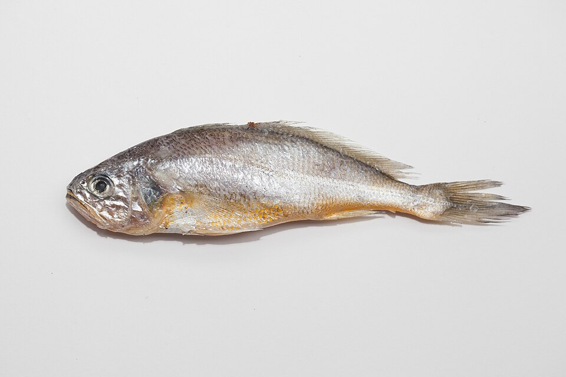
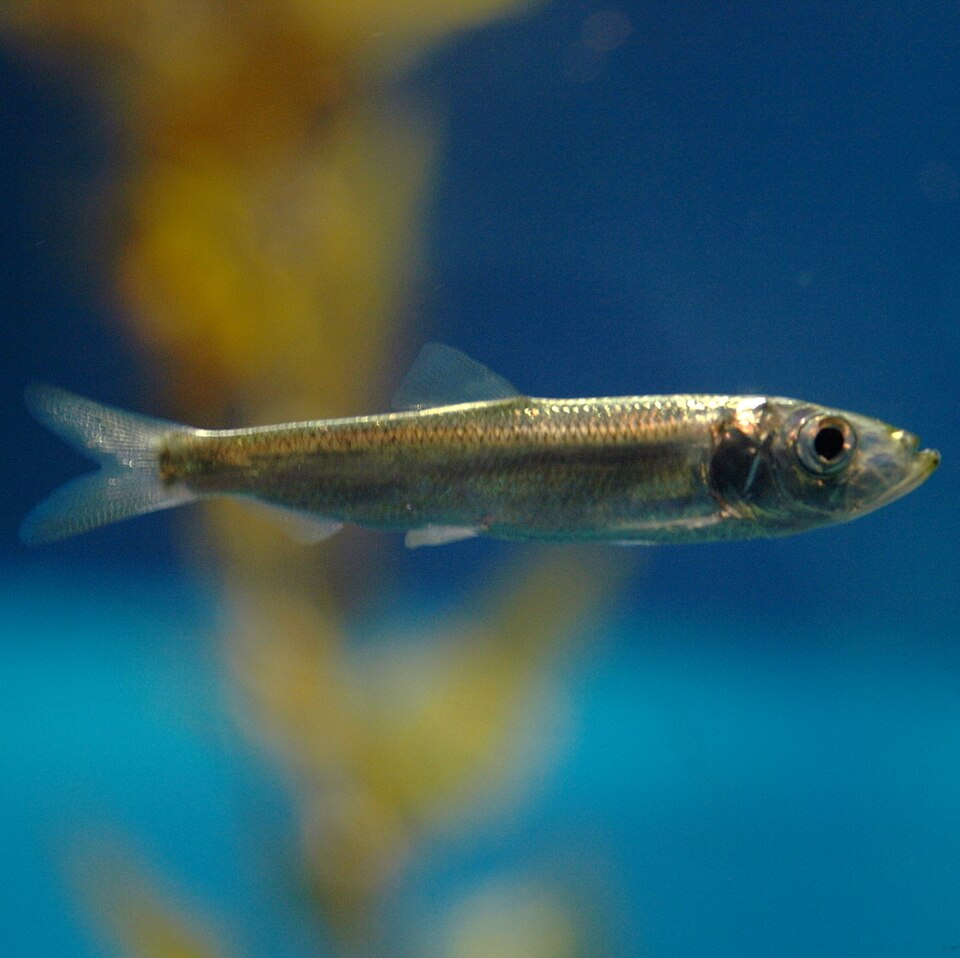

부산 연안 시민과 선박이 함께 만드는 생태 기록
배가 지나는 길에서
생명의 흔적을 남깁니다.
현재 위치나 지도 핀으로 관찰 지점을 정하고 발견한 생물종을 신고하세요. 한 개의 대표 항로를 따라 이동하는 선박의 수중소음 범위도 함께 확인할 수 있습니다.
선박·소음권·추천 항로는 교육용 시뮬레이션이며 항해용 정보가 아닙니다.
LIVE FIELD BOARD
연안 관찰 지도
관찰권역과 시연 선박의 상대 소음 영향권이 겹치는지를 확인하세요.
BUSAN SEA NOW
부산항 외해 해양 현황
Open-Meteo 해양모델 추정값 · 실측 및 항해용 정보 아님
관찰권역과 선박 영향권이 겹칩니다.
ROUTE REFERENCE
남해 외해 → 부산 북항 시연 경로
API 경로 계산 중남해·거제·가덕도·오륙도 외해의 해양모델을 확인하는 중입니다.
시연용 추천 경로 · 실제 운항은 최신 해도와 부산항 VTS 지시 우선
COMMUNITY LOG
최근 관찰 신고
Supabase 온라인 게시판에 연결되어 다른 기기에서도 신고 위치·추정 활동권·현장 사진을 함께 확인할 수 있습니다. 신고 내용은 전문가 검증 전의 사용자 관찰 기록입니다.
QUIET PASSAGE REWARD
저소음 운항 확인서 인증
위험구역에서 감속한 뒤 발급받은 PDF 확인서를 올리고 지원 혜택을 확인합니다.
MY REWARDS
인증 내역
아직 인증한 확인서가 없습니다.
시연 안내 혜택 버튼은 서비스 흐름을 보여주기 위한 기능입니다. 실제 보조금이나 항만 사용료 할인은 관계기관의 제도와 심사 기준이 연결되어야 합니다.
UNDERWATER NOISE
선박 소음은 바닷속의
‘정보’를 가릴 수 있습니다.
물속에서 소리는 멀리 이동합니다. 어류와 무척추동물을 포함한 해양생물은 먹이·위험·서식 환경을 파악하는 데 소리를 이용하므로, 선박 소음의 크기와 지속시간, 거리, 생물종에 따라 영향이 달라질 수 있습니다.
산란·무리 신호 가림
선박의 지속음이 어류가 내는 낮은 주파수 신호와 겹칠 수 있습니다.
먹이·이동 행동 변화
소음 노출 조건에 따라 먹이활동이나 서식지 이용이 달라질 수 있습니다.
가까운 고강도 노출
음압과 노출시간이 클수록 청각·신체 영향 가능성도 커집니다.
FREQUENCY OVERLAP
어떤 소리 대역이
어떤 생물과 겹칠까요?
선박은 추진기 공동현상(프로펠러 주변 기포), 엔진과 보조기계 때문에 넓은 주파수의 소리를 냅니다. 아래는 측정값이나 피해 판정 기준이 아니라, 생물의 소리 이용 범위와 겹칠 가능성을 설명하는 교육용 분류입니다.

참조기
산란과 무리 행동에 쓰는 낮은 소리가 선박 저주파에 가려질 가능성을 살펴봐야 합니다.
우선 비교할 선박대역 20–500 Hz
청어
부레와 청각기관이 연결된 그룹은 주변 소리 변화와 지속적인 선박 소음에 민감할 수 있습니다.
우선 비교할 선박대역 20 Hz–1 kHz대형 선박 저주파 × 민어과·청어과
다수 경골어류의 소통·행동 범위
일부 어류와 무척추동물의 감지 범위
해석 주의 실제 영향은 음압, 입자 움직임, 노출시간, 거리, 수심과 해저지형, 생물종·성장단계에 따라 달라집니다. 사진 속 종은 음향 특성을 설명하는 대표 예시이며 부산 현장의 피해가 확인됐다는 뜻은 아닙니다.
QUIETER OPERATION
운항자가 실천할 수 있는 것
- 안전과 관제 지시를 우선기상·조류·교통 상황을 먼저 확인합니다.
- 불필요한 급가속을 줄이기가능한 조건에서 속도와 엔진 부하 변화를 부드럽게 관리합니다.
- 민감 구역과 거리 확보항로와 안전이 허용하는 범위에서 보호·관찰권역 외곽을 이용합니다.
- 관찰 기록 남기기생물 출몰 위치와 상태를 기록해 다음 운항 판단에 활용합니다.
ESG 활용
운항 기록을
환경 실천의 근거로
감속 확인서와 생물 관찰 기록을 모아 기업의 해양환경 활동을 설명하는 자료로 활용할 수 있습니다.
환경
위험구역 감속과 저소음 운항 기록
사회
운항자의 생물 관찰과 현장 정보 공유
관리
확인번호별 인증 내역 관리
시연용 기록 화면이며 공인 ESG 평가나 인증을 대신하지 않습니다.